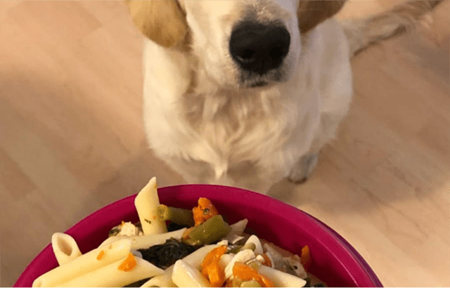
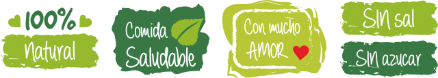

Receta casera para tu perro: Macarrones con pollo.

Los macarrones son uno de los platos ideales que le podemos
dar a nuestro perro ya que le aportará un alto nivel de hidratos de carbono y mucha energía.
Ingredientes:
- Pasta corta,macarrones o ravioli
- 4 tazas de agua
- 3 huevos
- 1 pechuga de pollo o pavo
- 1 zanahoria
- Espinacas o brocoli
Tiempo de preparación ⏲:
20 minutos.
Pasos de preparación 👨🍳:
1.Lo primero que haremos antes de ponernos a hacer esta receta para nuestro perro es preparar todos
los ingredientes y comprobar que los tenemos todos.
2.Empezaremos cortando la pechuga de pollo, la zanahoria y las verduras en cuadraditos pequeños.
Los juntamos todos y reservamos para el siguiente paso.
3.Una vez que ya tenemos todos los ingredientes agarramos una olla grande y echando las 4 tazas de agua por
cada una de pasta la ponemos a calentar. Cuando el agua se ponga a hervir añadimos todos los ingredientes
junto a los macarrones, averigua qué pasta le gusta más al tuyo probando varias veces. Recuerda que los
perros no pueden tomar sal, así que no le eches a los macarrones del perro.
4.Ahora, dejando terminar de hacer los macarrones, agarramos los huevos para hacer una tortilla.
Antes de nada batiremos los huevos en un recipiente. Posteriormente en una sartén grande echaremos una
cucharadita de aceite de oliva virgen extra y verteremos los huevos previamente batidos. Dejaremos que
se haga una tortilla y le daremos la vuelta. Una vez hecha la cortaremos en pequeños cuadraditos y apartaremos
para el paso final.
5.Por último, ya hechos la pasta para nuestro perrito, sacaremos los macarrones con pollo y verdura para tu perro
y escurriremos el agua. Echaremos los macarrones en el comedero junto con las verduras y la tortilla y el pollo
troceado..
6.Removeremos bien todos los ingredientes y dejaremos enfriar. Listo, ya tenemos hecha esta fantástica y riquísima
receta de macarrones con pollo para perros. Espero que le haya gustado a tu peludo. Comparte tu experiencia
compartiendo en redes sociales y dejándome un comentario más abajo.
¡Listo! ¡A comer!
Una vez que este cocido,lo retiramos del fuego y esperamos a que se enfrie. Despues mezclamos el arroz con el
pollo y le servimos una porcion en el plato.Podemos guardar si nos ha sobrado algo en un taper y dejarlo en la
nevera hasta que se lo demos todo.

Importante saber:
Olvidar la típica receta de macarrones con tomate que muchos tomamos, la pasta a nuestros perros debemos dársela
sin salsa y sin sal.
